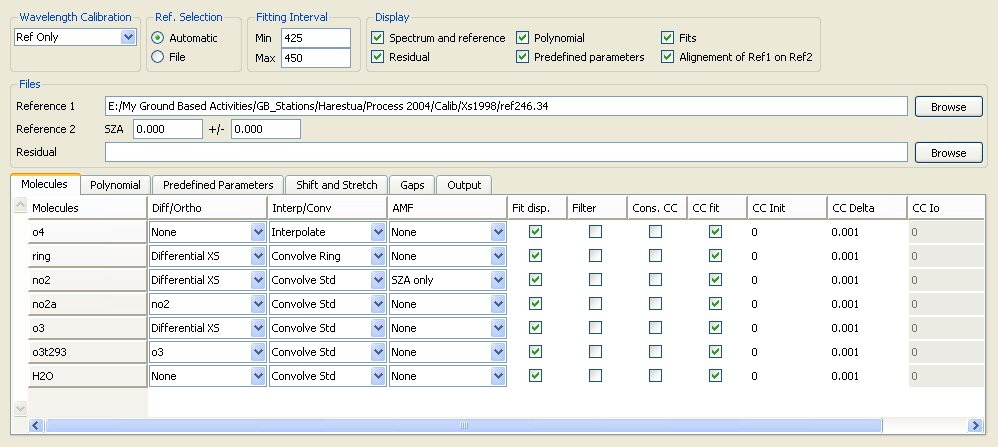

QDOAS Analysis Windows properties : Molecules page

Molecules are characterised by their cross section. They are represented by symbols previously defined in the Symbol page of the user interface. QDOAS needs these symbols for internal use : to create lists of available molecules for specific options (for example : in the Differential cross sections column or in the Shift and stretch page) and to build cross section files filters.
- For internal needs to the program, cross section files names must imperatively start with the symbol name as prefix followed by the underscore character !
- There is no constraint on the cross section file extension; the default one used by QDOAS for creating cross sections files filters starts with “xs”.
Right-click and select Insert, Delete or XS Filename options in the contextual menu respectively to insert a new molecule in the list, to delete an existing one or to modify the file associated to a cross section. The Remove option is disabled for a symbol if another cross section is orthogonalised to the selected one or if the selected symbol is used in the Shift and Stretch pages.
Differential cross sections can be generated by orthogonalisation according to the definition of an orthogonal base formed with the component vectors (generally, a base of order 2) of the polynomial defined in the Linear parameters page. Three options are available :
| None | the original cross section is used; |
| Differential XS | a differential cross section is generated either :
|
| A cross section in the proposed list | the selected cross section is orthogonalised to the orthogonal base (if defined) and to another cross section defined in the list (orthogonalisation in cascade is allowed). This case prevents from possible correlation between two cross sections (for example, two O3 cross sections measured at different temperatures). The list of available cross sections includes all cross sections symbols defined in this page except the one selected. It is updated as cross sections symbols are added in or removed from this page. |
Cross sections should be defined on the grid of the control spectrum before the analysis. This column describes the action to perform on the selected cross section :
| None | the selected cross section is assumed to be correctly aligned on the reference spectrum grid; so, no action will be performed on the cross section (for example, a user-defined undersampling cross section in optical density fitting); |
| Interpolate | the selected cross section will be interpolated on the grid of the reference spectrum; a cross section already pre-convoluted at the resolution of the instrument is expected in input. |
| Convolute Std | this option gives the possibility to convolute a cross section in real-time using either the information on the calibration and the slit function provided by the wavelength calibration procedure or the user-defined slit function specified in the Slit Function page of Project properties. If the wavelength calibration procedure is applied on both the control spectrum and spectra to analyse, the cross section is convoluted with the poorest resolution; |
| Convolute I0 | the cross section is convoluted with I0 correction using the concentration defined in the column Cc I0 (this is the concentration of the cross section used to calculate the theoretical optical depth in convolution with I0 correction); |
| Convolute Ring | in the same way, the program can generate a ring cross section; the expected input file must be a ring cross section pre-calculated by the QDOAS Ring tool on a high-resoluted grid; |
As heavy calculations induced by convolution are not really a problem anymore for the computers now, convoluting cross sections in real time is a comfortable option that avoid the pre-convolution of all cross sections with respect to the selected reference spectrum and the calibration options.
Usually, it is preferred to calculate AMF and vertical columns out of QDOAS using the appropriate radiative transfer model. Nevertheless, QDOAS gives the possibility to calculate vertical columns or to correct a cross section using wavelength dependent AMF through options proposed in the AMF column :
| SZA | vertical columns are calculated using AMF depending only on the solar zenith angle; |
| Climatology | vertical columns are calculated using climatological air mass factors; the AMF depends on the solar zenith angle and the calendar day; |
| Wavelength | before the analysis, the selected cross section is corrected using wavelength dependent AMF (modified DOAS). |
Additional option AMF Filename is proposed in the contextual menu to complete with the name of the file containing the AMF (see the requested file format according to the selected AMF option in the QDOAS Software User Manual).
Control of the parameters to fit
QDOAS minimises residuals of the DOAS equation using a Marquardt-Levenberg non-linear least-squares (NLLS) algorithm. The method implements a gradient-expansion algorithm, which is based on the iterative combination of a steepest-descent method (suitable for approaching the minimum from far away) and a linearisation of the fitting function.
-
In « optical density fitting », concentrations of the molecules are fitted linearly and the CC Init and CC Delta buttons can be ignored. Nevertheless, if the CC Fit button is unchecked, the weight of the selected cross section in the optical density is fixed at the concentration value given in the CC Init column.
- In « intensity fitting », the concentrations of the molecules are non linear parameters. The initial concentration value and the initial delta value used by the non-linear algorithm to calculate numerically partial derivatives of the fitting function are respectively given by CC Init and CC Delta. The CC Delta default value shouldn't be modified except if the system seems not to converge.
The selection of the analysis method is made in the Analysis page of Project properties. Further details on the retrieval algorithms can be found in the Description of Algorithms section of the QDOAS Software User Manual
For advanced users : it is possible to constrain the concentration of a molecule to the value calculated in the previous analysis window
If the Cons CC button is checked, the CC Fit button is unchecked and the CC Init value is 0., the concentration of the selected molecule is not fitted but initialized to the value calculated in the previous analysis window if any.
This column is active only if the Fits button is checked in the Display frame of the current dialog box. It allows selecting which cross sections fits will be displayed. Note that the display of the fits of all spectral analysis windows could be disabled from the Display page of Project properties.
This column is active only if a low-pass filter has been selected in the Filtering tab page of Project properties. It allows defining individually which cross sections are to be filtered.